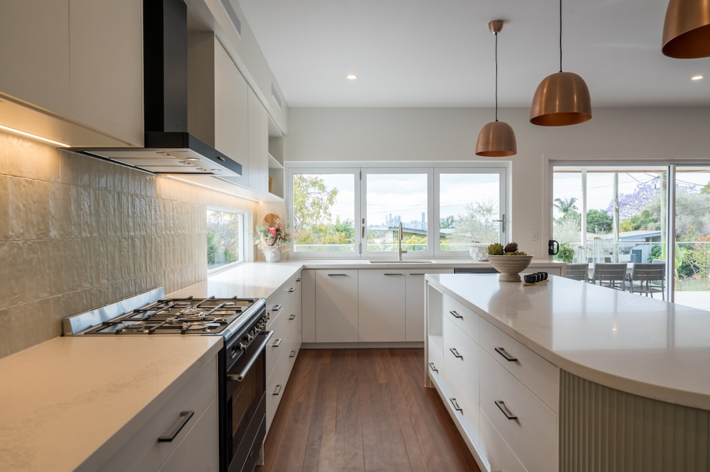

A standard Brisbane bathroom renovation is presented at $22,000 to $26,000, with cosmetic work from $8,000 to $15,000, premium jobs from $35,000 upward, and a typical standard turnaround of 2 to 3 weeks. The same published figures note labour at 40 to 50% of budget, 60 to 70% typical ROI for mid-range work, and possible extra waterproofing cost of $500 to $1,000 in Brisbane conditions.
For homeowners weighing bathroom renovations brisbane options, the useful starting point is not the tapware list but the written scope, waterproofing standard and calendar program, because those items determine whether a quote stays stable once work begins.
Bathroom Renovations Brisbane Explained
Bathroom Reno Brisbane describes a full bathroom job as a strip-out and rebuild that includes AS 3740:2021 compliant waterproofing, new tiling, fixtures, vanity, toilet and shower installation, with plumbing and electrical work handled as part of the project. That definition is useful because it draws a clean line between a true renovation and a lighter cosmetic update.
When two quotes look close on price, check whether both include demolition, substrate preparation, waterproofing, tiling, fixtures, plumbing, electrical work and final fit-off. A fixed-price quote is easier to compare when each stage is visible in writing. The published guidance also recommends a 10 to 20% contingency, which is a practical buffer when an older bathroom may reveal hidden issues after strip-out.
Waterproofing should not be buried in a short allowance note. The Brisbane guidance specifically refers to AS 3740:2021 compliant waterproofing with certificates, so ask what certificate is handed over at completion and whether preparation, membrane work and drying time are fully included.
Use budget bands to test what is missing
The published ranges are broad, but they become useful once matched to scope. Cosmetic updates are listed at $8,000 to $15,000, standard projects at $22,000 to $26,000, mid-range work at $15,000 to $35,000, and premium bathrooms at $35,000 to $120,000 or more. Labour is said to account for 40 to 50% of the budget, so a very low headline figure often deserves a check for omitted trade work or stripped-back allowances.
Layout changes are one of the fastest ways to move a project from one budget band to another. The Brisbane page highlights wall hung vanities, large format tiles, frameless shower screens and added storage for compact rooms, while bath-to-shower conversions trade one fixture for better circulation and accessibility. If the brief is mostly about making a tight room work harder, the design questions overlap with small bathroom renovations brisbane more than with a full luxury rebuild.
There is also a Brisbane-specific waterproofing note worth keeping in the budget review. The published guide says humidity may add $500 to $1,000 for extra waterproofing, so ask whether that allowance already covers the full system and certificate or whether part of it sits outside the fixed price.
Check the calendar, not just the promise
The timing guidance needs to be read in full. One part of the Brisbane material promotes a 2 to 3 week standard turnaround, while the FAQ expands that to 1 to 2 weeks for cosmetic updates, 3 to 6 weeks for standard renovations, 4 to 6 weeks for full works with plumbing and electrical changes, and 8 weeks or more where structural changes are involved. Those figures can sit together, but only if the builder explains whether the schedule refers to active installation time or total calendar time.
Waterproofing is the stage most likely to expose an unrealistic program. The same material says waterproofing alone requires 2 days including drying time, and also refers to HIA reporting 13 to 25 days for installation. A short completion promise is less useful than a program that shows rough-in, waterproofing, tiling, fit-off and final handover in order.
Ask one practical question before signing: what has to happen before work starts, and what could pause the job once it has started? If the answer is vague, the quoted timeline is still a sales line rather than a working program.
Who this kind of renovation suits
The strongest cases in the Brisbane material are problem-led rather than style-led. It points to outdated bathrooms, cracked tiles, poor waterproofing, lack of storage and inefficient layouts as common reasons to renovate. That helps a homeowner decide whether the room needs a cosmetic reset or a deeper rebuild that deals with the cause of the problem.
- Compact bathrooms and ensuites, where storage pressure and circulation matter as much as finishes.
- Bath to shower conversions, where a walk-in shower can create more usable space and improve accessibility.
- Ageing-in-place updates, where the published inclusions mention grab rails, no-hob walk-in showers, non-slip flooring, raised toilets, handheld shower heads and lever tapware.
- Higher-finish projects, where heated towel rails, underfloor heating, freestanding baths, LED shower niches and premium finishes push the job into a different cost range.
Before choosing finishes, ask the builder to identify the main functional change in one sentence. If that answer is clear, the rest of the quote usually becomes easier to judge.
- Set the scope first. Write down what stays, what is replaced and whether the job is cosmetic, standard, accessible or premium before comparing finishes.
- Confirm compliance items. Ask for QBCC licence details, the waterproofing standard and who is carrying out plumbing and electrical work.
- Read the program properly. Separate installation time from total calendar time and make sure waterproofing, drying, tiling and fit-off stages are shown.
- Compare the total contract. Review fixed-price inclusions, contingency, waterproofing allowances and exclusions before treating the lowest quote as best value.
| Project type | Typical budget | Typical program |
|---|---|---|
| Cosmetic update | $8,000 to $15,000 | 1 to 2 weeks |
| Standard renovation | $22,000 to $26,000 | 3 to 6 weeks |
| Premium or structural scope | $35,000 to $120,000+ | 4 to 6 weeks, or 8+ weeks with structural changes |
Common questions
What budget range is published for a Brisbane bathroom renovation? The published figures place cosmetic updates at $8,000 to $15,000, standard renovations at $22,000 to $26,000, mid-range work at $15,000 to $35,000, and premium bathrooms at $35,000 to $120,000 or more. The useful comparison is whether waterproofing, plumbing, electrical work, fixtures and certificates are all included at that price.
Why can one bathroom quote show 2 to 3 weeks and another show much longer? The Brisbane material promotes a 2 to 3 week standard turnaround, but its FAQ also lists 1 to 2 weeks for cosmetic work, 3 to 6 weeks for standard renovations, 4 to 6 weeks for full works with plumbing and electrical changes, and 8 weeks or more for structural changes. Waterproofing alone is said to need 2 days including drying time, so the staged program matters more than the shortest promise.
What documents should be checked before signing a renovation contract? Ask for the fixed-price inclusions, QBCC licence details, insurance position, the waterproofing standard and the completion documents to be handed over. The Brisbane guidance specifically refers to AS 3740:2021 compliant waterproofing with certificates.
This guide covers Brisbane bathroom budgeting, timing, waterproofing and quote comparison for common renovation briefs.